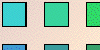

| For simplicity, throughout this lab we consider only one IFS. These four transformations generate the filled-in unit square. | ||||||
|
| We introduce the notion of IFS with memory through the example of allowed pairs, illustrating this with a graphical representation of allowed pairs | |
|  | Next we give the software representation of allowed pairs. |
| As a simple example, we find how to determine which allowed pairs generate single lines. | |
| Examining some of these combinations of lines leads to the notion of romes, central to understanding which of these pictures can be made by IFS without memory (but with more transformations). | |
| A natural extension of allowed pairs is allowed triples. To facilitate experimentation, we describe the software representation of allowed triples. | |
| As a simple example, we show how to find the allowed triples to generate a single gasket, and also four small gaskets. |
Return to IFS with Memory Lab.